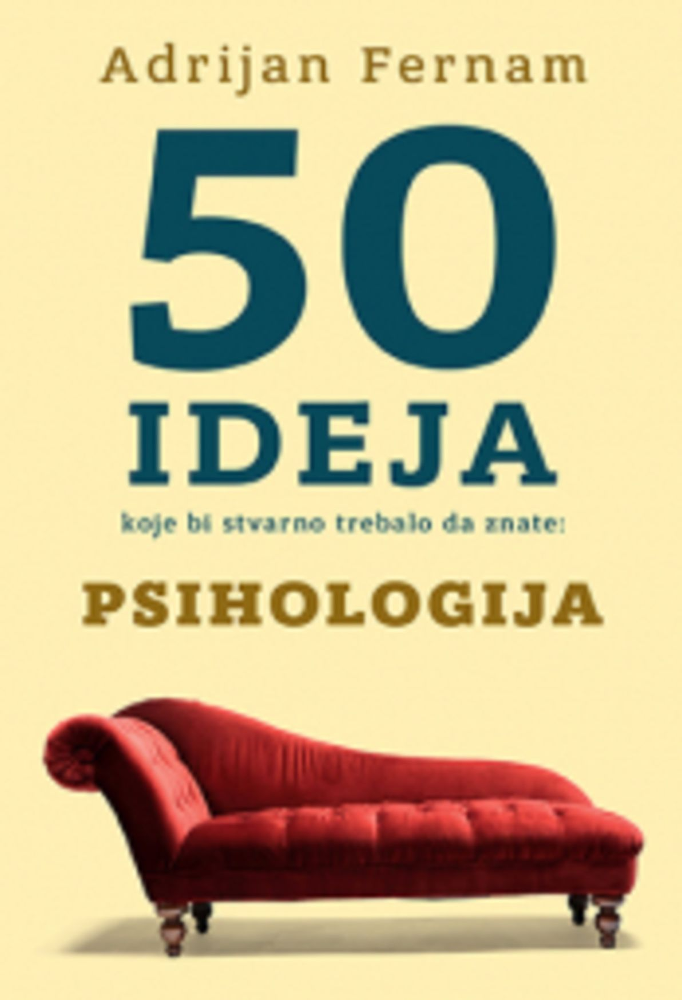
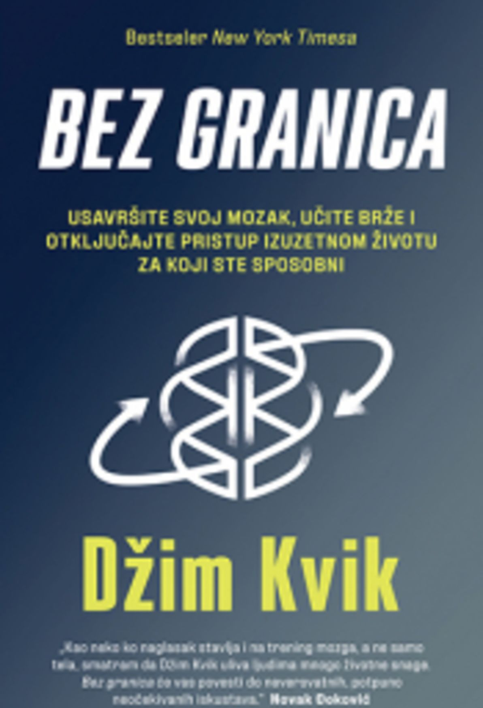
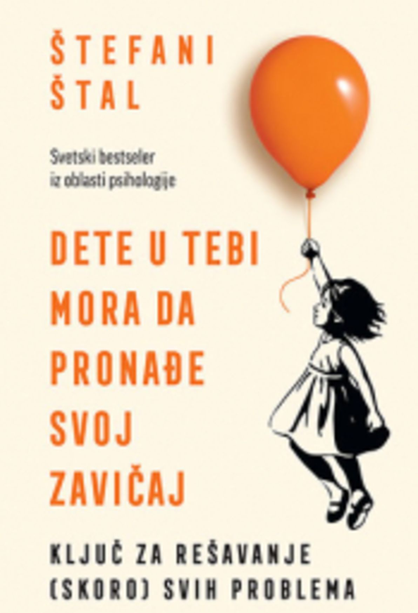
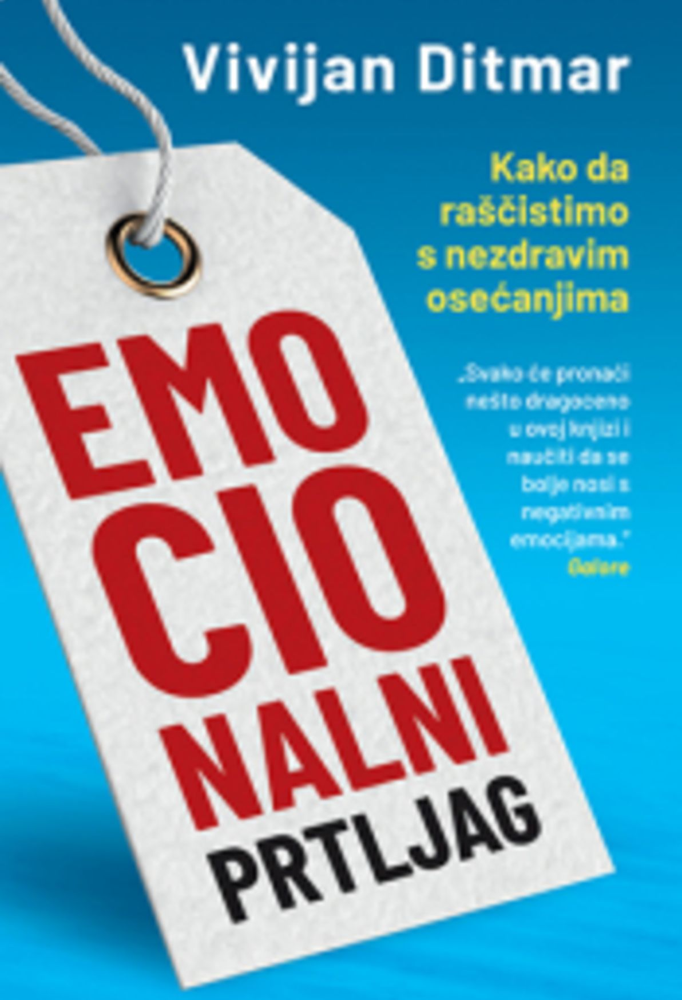
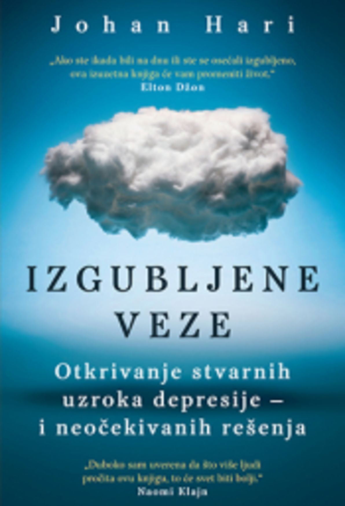
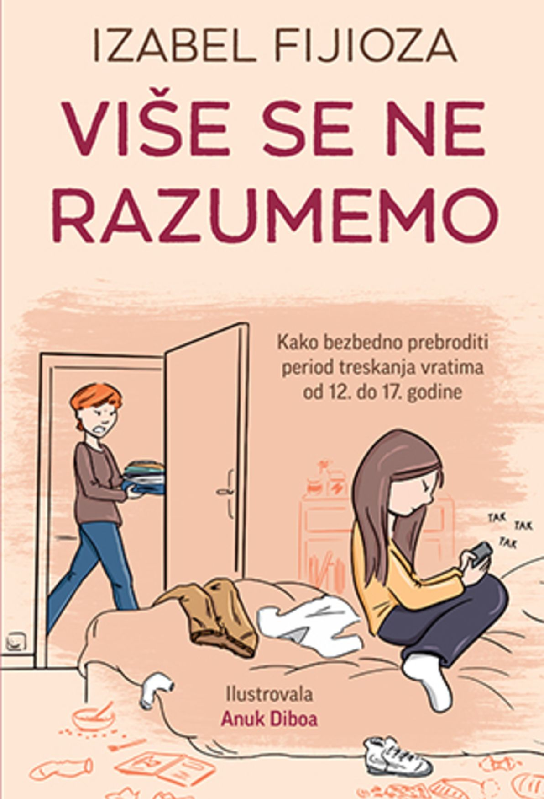

Saveti i preporuke prilikom odgovaranja na pitanja
- Prilikom formulacije odgovora trudite se da odgovor bude što jasniji i precizniji
- Pre nego što pošaljete odgovor proverite da li je u skladu sa temom pitanja
- Ako niste verifikovani psiholog, molimo Vas da proverite da li imate mogućnost da odgovorite na postavljeno pitanje
- Vodite računa da je podrazumevano javno odgovaranje na pitanja. Ukoliko želite da anonimno odgovorite, molimo Vas da to i naznačite u odgovarajućem polju.
Pitanje na koje želite da odgovorite
Zdravo, dugo mi je trebalo da uopšte progovorim o ovoj temi. Anksioznost osjećam već nekih 5/6 godina. Dugo sam odbijala bilo kakav vid pomoći, nijesam htjela da me drugi vide “ludom”, plašila se da me psiholozi neće razumjeti, da će misliti ko zna šta, da će me ljudi okolo osudjivati.. o svakoj situaciji u životu previše razmišljam unaprijed. I najkraći razgovor ja u svojoj glavi razradim unaprijed, stalno strepim od gluposti, muči me kako ću reći ovo, kako ću uraditi ono… Strah od javnog govora da ni ne pominjem, a nekad sam bila toliko slobodna i opuštena, sve ovo previše crpi energiju iz mene. Takodje, imam jako dobro pamćenje, ali toliko puta ponovim određene aktivnosti tipa provjeravam da li sam zaključala stan, da li sam prepisala nešto tačno iako znam da jesam.. Takodje pranje ruku, operem ruke i imam neki osjećaj nenormalno neprijatan da automatski moram opet da ih operem i tako više puta.. još kao mala obožavam neku pravilnost i organizovanost, u ormaru sve mora da bude savršeno složeno sve u kocku, čim jedna stvar nije po tom iznerviram se… Takodje imam jako čudne misli dok hodam tipa predjem preko stepenica i shvatim da sam ih prošla i više ne mogu to da uradim i vratim se još jednom tuda… Da ne nabrajam više… Interesuje me šta ja sama mogu da uradim povodom toga. Hvala Vam puno, već mi je lakše.
Preporučena literatura za sve ljubitelje psihologije
-

50 ideja koje bi stvarno trebalo da znate-Adrijan Fernam
Kolika je razlika između muškog i ženskog mozga? Postoji li zaista altruizam? Da li je naš um, odmah po rođenju, neispisana tablica? -

Bez granica-Džim Kvik
Usavršite svoj mozak, učite brže i otključajte pristup izuzetnom životu za koji ste sposobni. -

Dete u tebi mora da pronađe svoj zavičaj-Štefani Štal
Ključ za rešavanje (skoro) svih problema. Svetski bestseler iz oblasti psihologije -

Emocionalni prtljag-Vivijan Ditmar
Svako može, ako želi, da pronađe nešto dragoceno u ovoj knjizi i da naposletku nauči da se bolje nosi s negativnim emocijama. -

Izgubljene veze-Johan Hari
Otkrivanje stvarnih uzroka depresije – i neočekivanih rešenja -
 Šta nam svako telo govori-Džo Navaro
Šta nam svako telo govori-Džo Navaro
Priručnik bivšeg agenta FBI-a za brzo „čitanje“ ljudi. Zašto je lice poslednje mesto na kojem treba tražiti znake iskrenih emocija? -

Više se ne razumemo-Izabel Fijioza
U knjizi Više se ne razumemo otkrićemo šta se dešava u glavi i telu naših tinejdžera. -
 Borba do pobede-Srđan Krstić
Borba do pobede-Srđan Krstić
Ova knjiga je napisana s namerom da pomogne ljudima kojima je teško, onima koji ne vide izlaz.